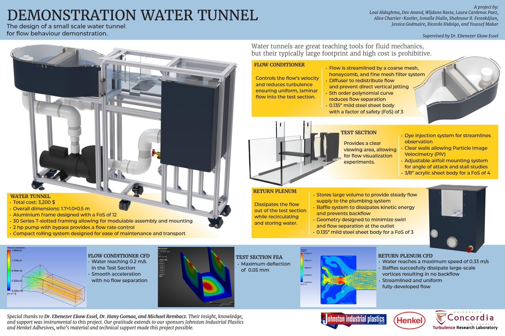
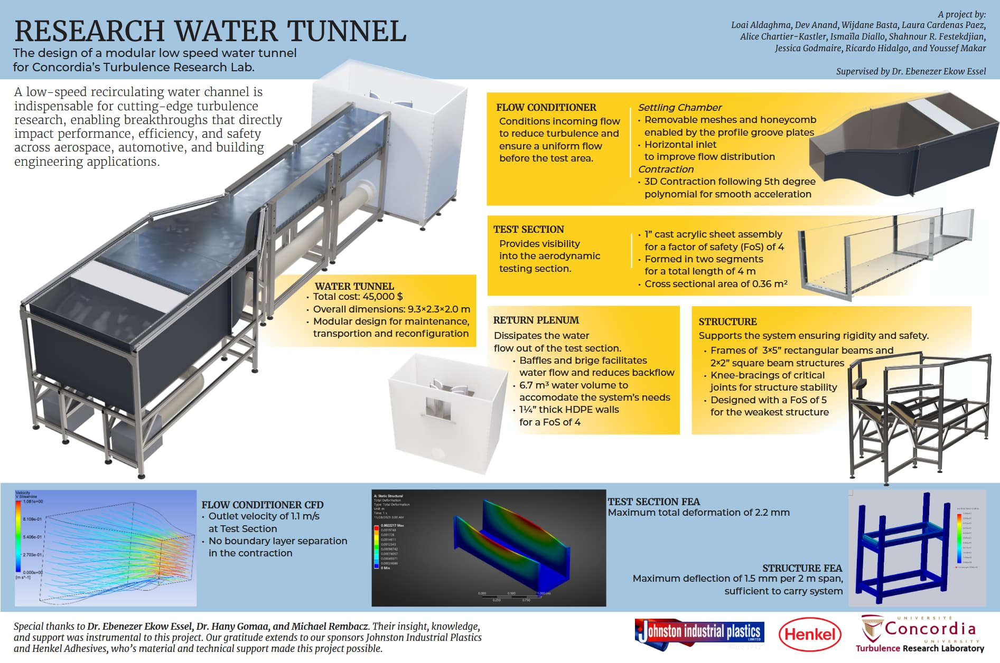
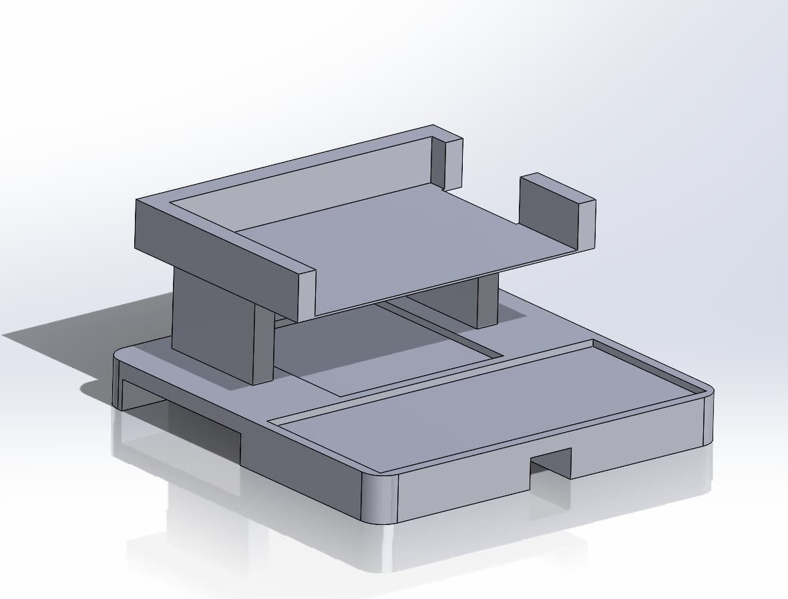
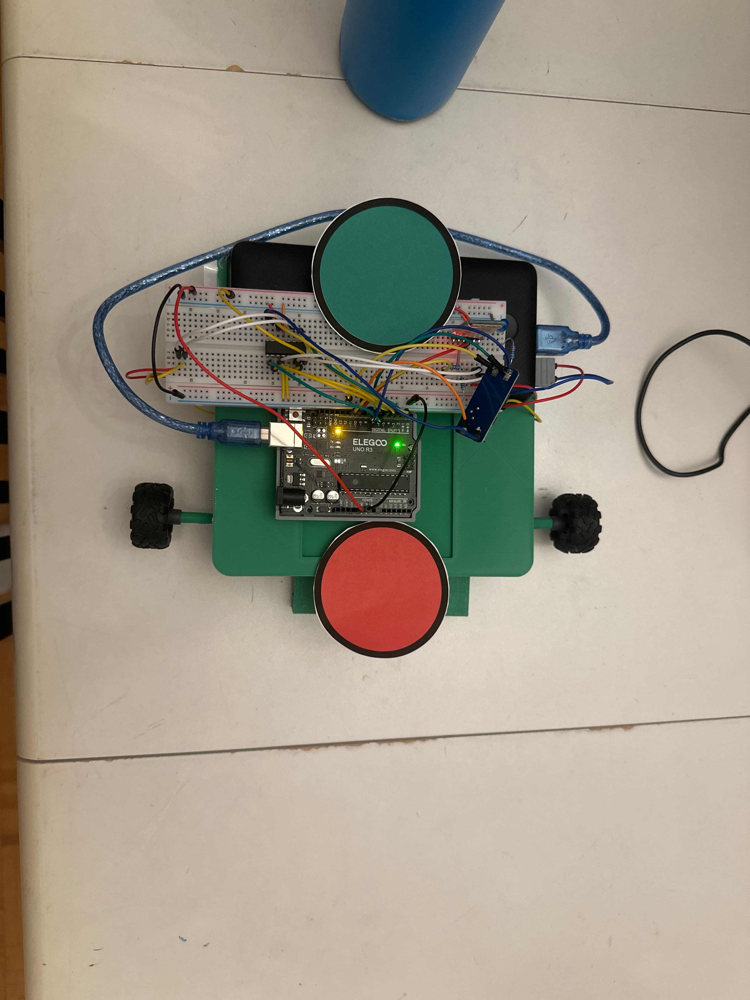
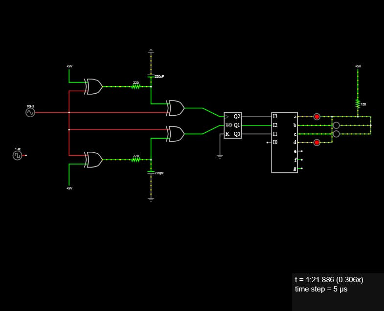
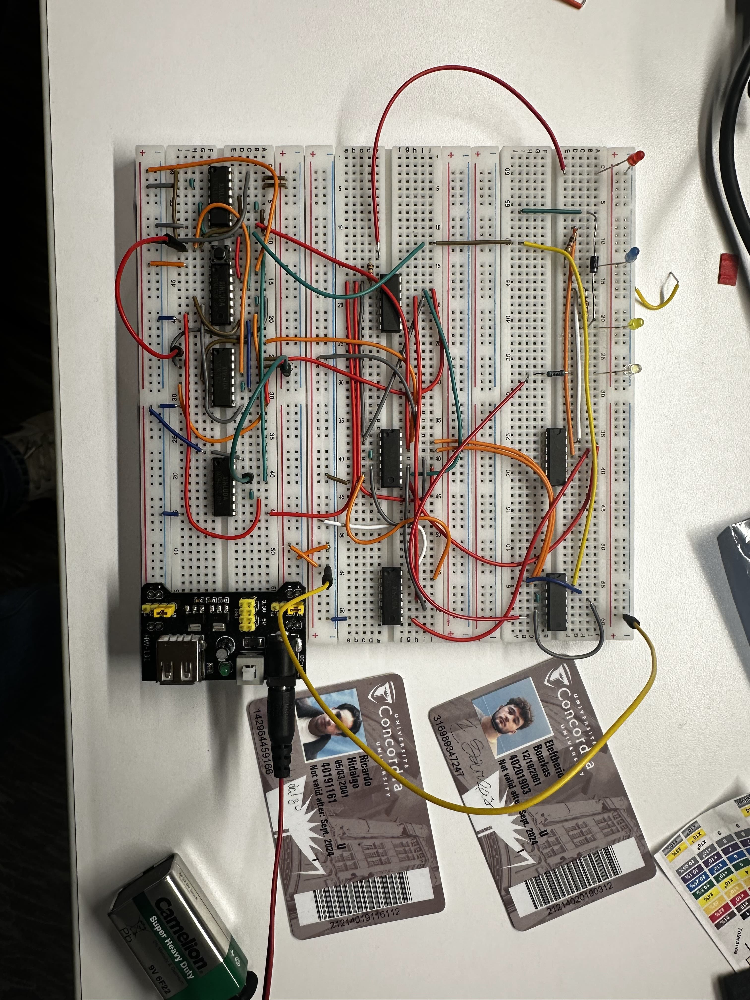
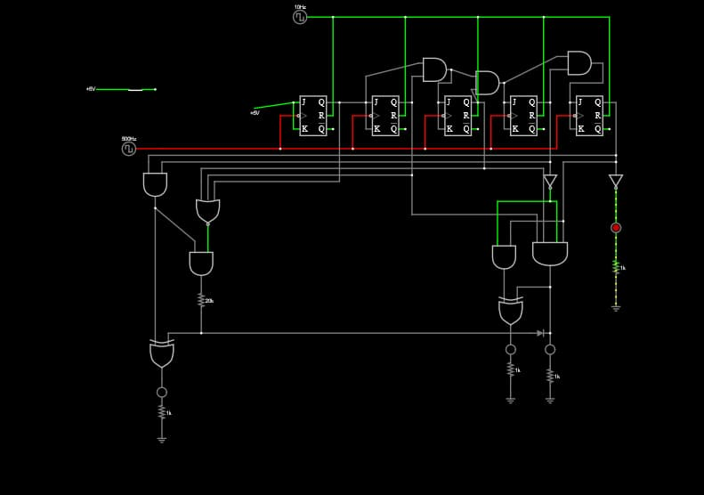
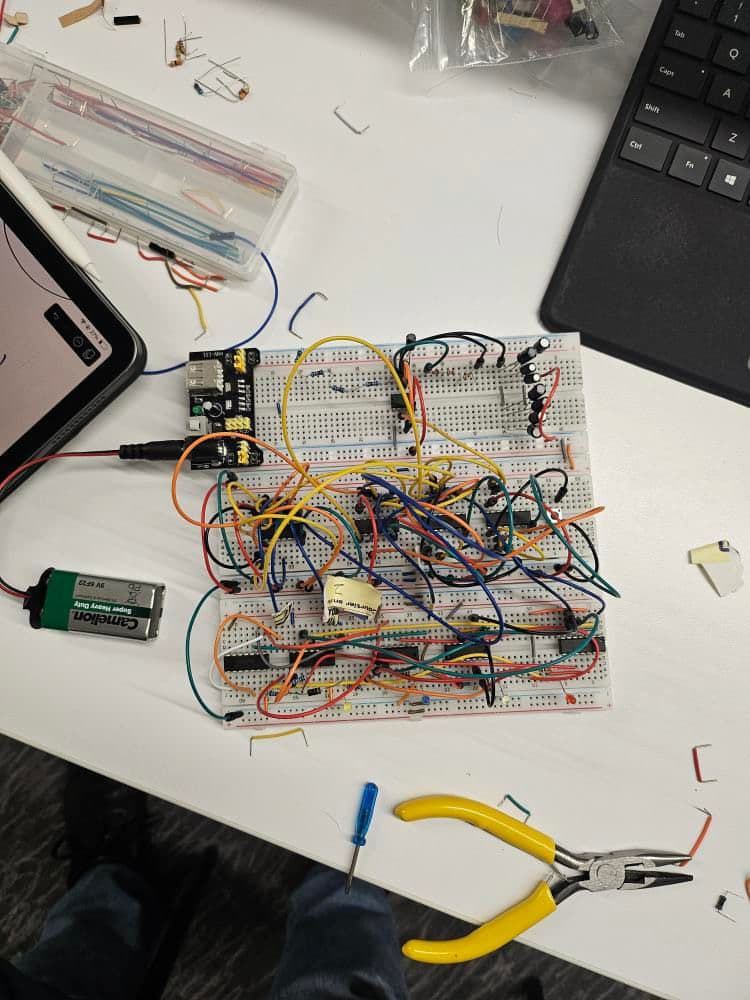

Ricardo Hidalgo
CPI, Mechanical Engineering graduate
- location
- Montreal, QC
- current role
- Senior Associate Mechanical Designer in MedTech
- education
- B.Eng. Mechanical Engineering, Concordia University
- status
- always open to a good conversation
#about
Hi there,
I'm Ricardo, a mechanical engineering graduate based in Montreal. By day I work on the design of medical devices at Jubilant DraxImage; outside of work I'm usually elbow-deep in something mechanical, whether that's building a bike from scratch, chasing down a weird noise in my car, or playing music with my brother. I like projects where I actually have to understand how something works, not just get it working.
#experience
01 Senior Associate Mechanical Designer current May 2025 - present
Joined as a hardware intern and was promoted into this role. Project technical lead, supporting project leadership, conducted investigations, designing & executing testing protocols, and producing technical documentation.
- Lead mechanical design of a test bench replicating a clinical-grade medical device, integrating mechanical, electrical, and software subsystems.
- Designed and executed fluidics testing and characterization protocols; led root-cause investigations .
- Work across software, hardware, electrical, and business teams; Applied ISO 13485, ISO 13849, ISO 14971, and ISO 527 among others in a regulated industry.
root-cause analysis · cross-functional collaboration · ISO 13485 / 13849 / 14971 / 527 · Solidworks · Fluid Mechanics · Research & Development · PET/SPECT · Medical Imaging · Radiation
02 Mechanical Designer current September 2024 - present
Designed multiple custom automotive products with innovative solutions based on client's requests. Wide range of solutions designed for clients ranging from individuals to multinational corporations.
- Conceived and designed a variety of mechanical assemblies and products for automotive clients. Products are mostly designed to be retrofit onto existing vehicles.
- Heavily involved in the manufacturing, prototyping, CNC, and machining process of many of the designed parts.
- Implementation of Project scheduling, Design for Manufacturing, stress analysis, fastener selection, and more.
Design for Manufacturing · Manufacturing · CNC · CAM · Project Management · Fusion 360
03 Production Engineering Intern May 2024 - September 2024
Part of the mandate was assisting in continuous improvement; reduced man hours up to 422 h/year, increased savings up to 33,760.00$/year and increased production efficiency.
- Supported production by preparing documentation, scheduling, labeling components, tackling production issues, and increasing worker efficiency.
- Developed projects such as automated KPI tracker for projects & tasks, data parser for sensor readings in testing units, standardized procedures, automated & optimized storage for reduced wasted time and more.
Continuous Improvement · Lean Manufacturing · Cross-functional collaboration · presenting
04 Programming Consultant June 2022 - January 2025
Collaborating with various teams on Salesforce development for integrations to client's systems and needs.
- Object oriented programming, dynamic class injection, package integration, scripting/automating large data import processes, documentation, automated tasks and more.
- Coding with Salesforce languages for managing and creating components, triggers, flows, object migrations, etc. (Java, Javascript, SQL, HTML/CSS,)
Salesforce · root-cause analysis · cross-functional collaboration · presenting
#projects
01 Low-Speed Water Tunnel research complete
Context. Dr. Ebenezer Ekow Essel's Turbulence Research Lab needed a research-grade low-speed water tunnel to support ongoing experimental fluid dynamics work.
Approach. I led the Fluids design of the entire system.
- Used CFD analysis to determine the optimal geometry for multiple components within the Flow Conditioner
- Multiple geometries explored, including a 3D, 10 degree polynomial contraction
- Both the CFD and FEA analysis were precise simulations with elements in the order of 10E7. The accuracy of the simulations had to be verified with Mesh independence studies.
- Was heavily involved in the mechanical, material choice, fastener selection, and manufacturing of the water tunnel's components.
Outcome. Two water tunnels were engineered, one was fully research grade, and a smaller scale version was redesigned and manufactured. The small scale version included more cost-effective materials, but was still manufactured out of steel.


CFD · FEA · Ansys · SolidWorks · DFM · technical drawing · Fluid Mechanics · Linux
02 Medical Device Test Bench industry ongoing
A project that started as a way to test a pump independently and evolved into a fully fledged test bench to test mechanical, fluidics, electrical and software features.
- Identified the key subsystems that would need to be implemented to replicate the original system.
- Included a variety of sensors to capture relevant metrics required for engineering studies and testing.
- Implemented innovative software features into the test bench, serving as a bridge to then push into production units.
The result is the first version of the test bench being created and consistently used for engineering investigations to help on field issues, as well as upcoming features.
Python · Electronics · Circuits · CAD · Fluid Mechanics · Data Processing · Sensors · Linux
can't really show pictures of this one :)
03 Autonomous Mobile Robot academic complete
Context. An autonomous mobile robot that uses a custom computer vision library as well as an external camera source
Approach. I singlehandedly designed the hardware and most of the software of this Autonomous Mobile robot. This robot uses a custom computer vision library combined with a custom electrical circuit to control the movements of the robot. The visual input was provided by an overhead camera which detected and tracked objects, and allowed the robot to switch between a chase or flee mode.
- A custom computer vision library was conceived to recognize borders and centroids of obstacles
- Dijkstra's algorithm was implemented used to decide the pathing of the robot in function of its target and obstacles.
- The hardware used was a simple webcam for visual input, a bluetooth module receiver for commands, a motor control module, servo motors, and more.
- The robot was fully 3D printed based on a custom frame design, tailored to our components.
Outcome. The object recognition of the software worked as intended, alongside the hardware aspect. The software was tuned to recognize objects with various coloured circled labels, tackling every frame individually in a matrix pattern to compute objects. However, the pathing still requires a bit of tuning based on closeness to the objects.


C++ · C · Computer Vision · Coding · electronics & circuitry · CAD · Serial communication · Pathing · Motor control · Image Processing
04 5-bit Analog Circuit academic complete
Context. Our final project for an electronics class was designing and building a fully analog circuit. We chose the analog BPM sensor and display.
Approach. The architecture chosen was a 5-bit system using asynchronous J-K Flip-Flops.
- 5 J-K Flip-Flops were used in an asynchronous layout paired with a clock
- Logic gates were implemented between Flip-Flops, as well as throughout the circuit.
- A button was used as the input, pressed at the desired rhythm.
Outcome. The output was a fully analog circuit that works like a charm. The architecture relies heavily on Op Amps, Logic Gates, Integrated circuits and many more components to execute the logic functionality of the circuit without using a single line of code. The circuit uses LED's to display the range of BPM's detected, resetting at a chosen interval.




Electronics · Circuits · Integrated circuits · Logic gates · Operating amps
05 Thermoelectric Car academic complete
Our final project for a thermodynamics class was to design and manufacture a thermoelectric car, using a Peltier device to climb a 15 degree slope.
- Performed calculations to establish the maximum electric output of a Peltier device to establish what the heat source and cold source should be
- Used mostly recycled components throughout the build, as this was a constraint imposed on us; with only the base and axle being 3D printed.
- Implemented lego gears to establish a powerflow to the wheels while increasing torque.
- Friction had to be increased at the wheels, which were CD's as there was some slipping.
Slowly but surely, the thermoelectric car was able to move. The car was able to go 1m on flat ground, and about 0.75m at a 15 degree angle due to the car losing too much inertia and the wheels would start to slip.
#contact
- rhidalgodr@gmail.com
- location
- Montreal, QC
- résumé
- download PDF